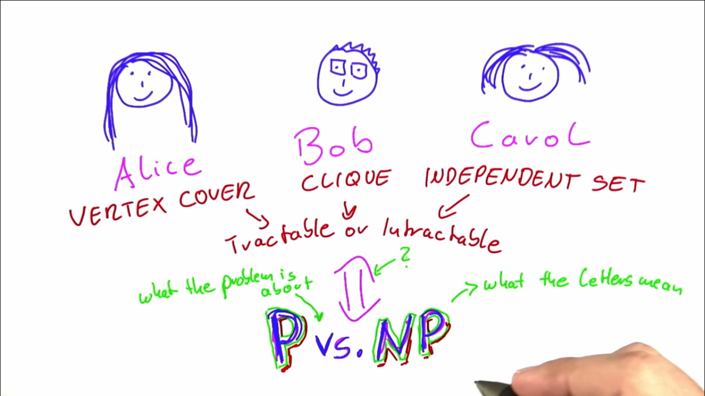
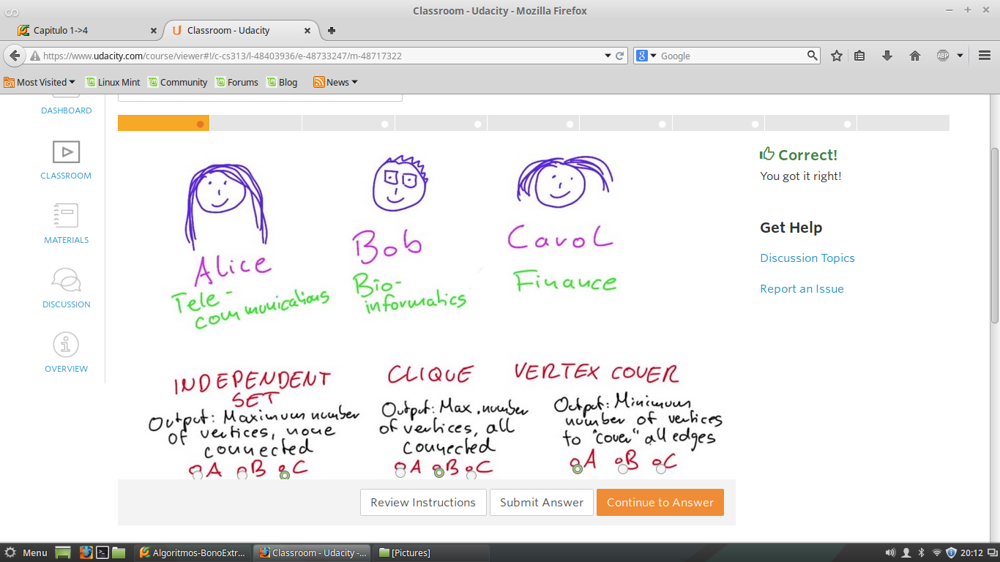
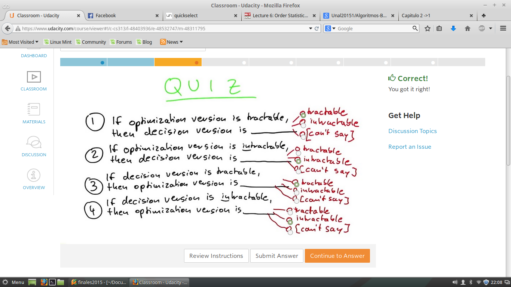
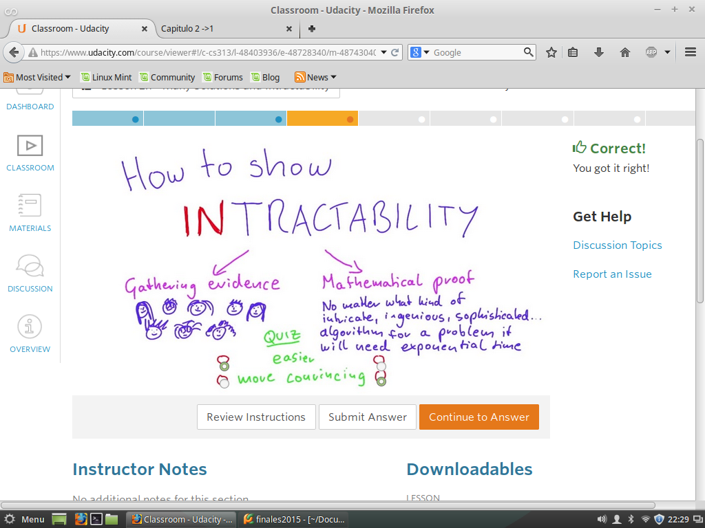
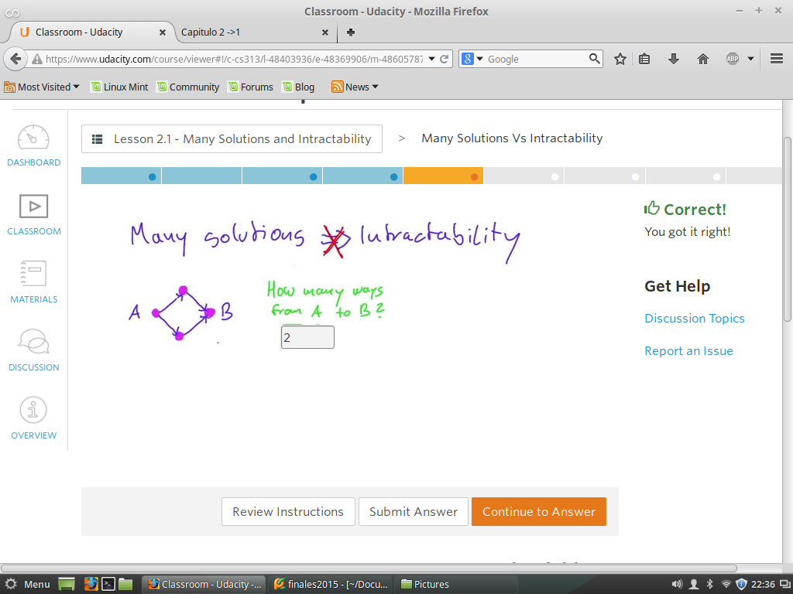
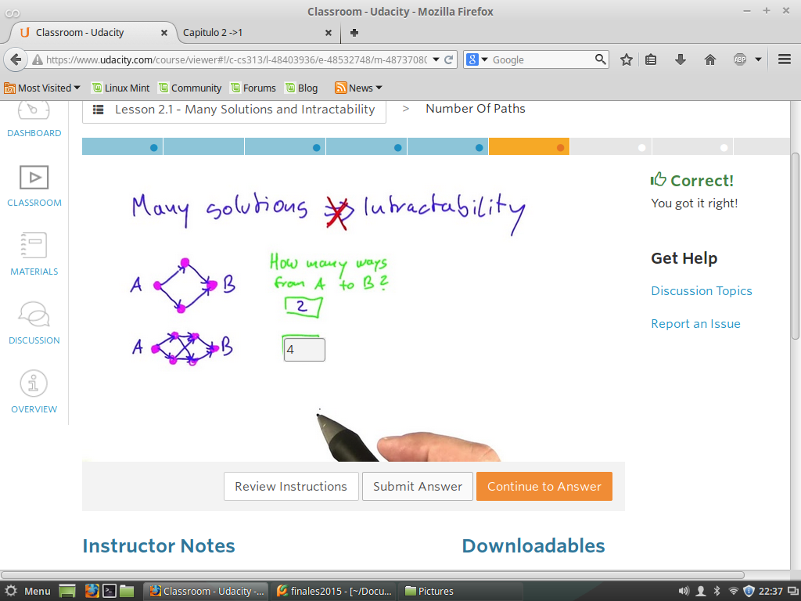
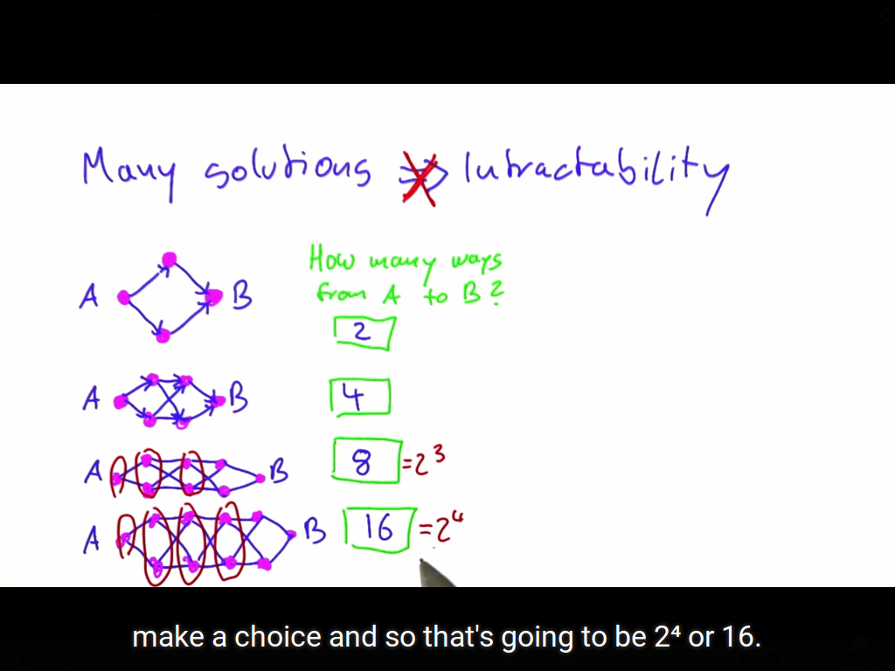
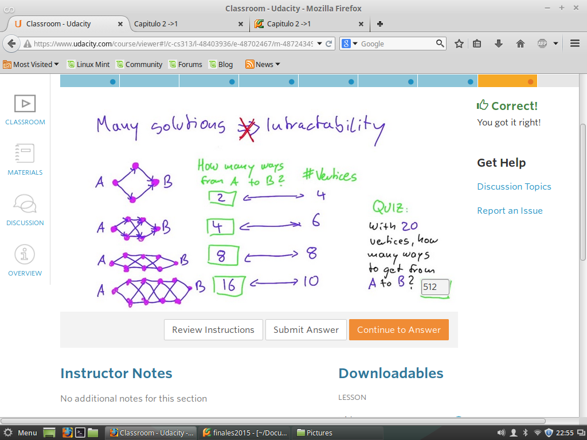

Muchas Soluciones y intratabilidad
La idea es plasmar cuatro cosas en esta Unidad
-> Que significa P vs NP
-> Cual es el Problema en realidad
-> Alice, Bob, Carol tienen alguna relacion con P vs NP
-> Forma de Conertirse en un millonario Instataneo

Quiz 1 - Recordando A los Tres Cientificos
Alice -> Vertex Cover
Bob -> Clique
Carol-> Independent Set

Quiz 2 - Optimizacion-Descicion
La Gran diferencia entre los problemas de Optimizacion y los de Desicion es:
Los Problemas de Optimizacion, nos preguntamos, buscamos la MEJOR SOLUCION,
Y la respuesta puede ser un numero.
Pero Los problemas de Desicion nos preguntamos es Posible encontara un valor de K,
Y la respuesta puede ser SI o NO.

Quiz 3 -Demostrar lo Intratabla
Para demostara solo es necesario encontar un algoritmo de tiempo polinomial.
Hay dos Formas de demostaralo:
Primero: Recopilacion de Pruebas. Si recordamos algoritmos de Alice, Bob,Carol.
Estos tres comparte una solucion de algoritmos intratables, pero si alguno de
ellos encuentra la solucion de lo exponecial a lo polinomial se puede decir
que los demas problemas son tratables.
Segundo: Realizando Pruebas matematicas
Ahora la idea es ver cual de estos dos enfoques es mas conveniete.

Quiz 4 -Algunos Solucionables Vs Intratables
No siempre significa que el numero de soluciones tenga relacion con
ver si es tratable o no.

Quiz 5 - Algunos Solucionables Vs Intratables 2
No siempre significa que el numero de soluciones tenga relacion con
ver si es tratable o no.

Quiz 6 - Algunos Solucionables Vs Intratables 2
No siempre significa que el numero de soluciones tenga relacion con
ver si es tratable o no.

Quiz 7 - Algunos Solucionables Vs Intratables 2
Para calcular el numero e caminos diferentes para ir de un punto A al B
se determina una formula General

RTA: 2^(n/2)-1